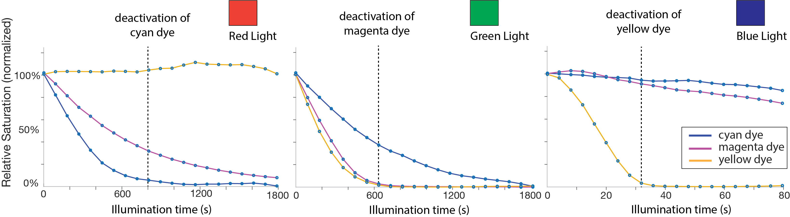
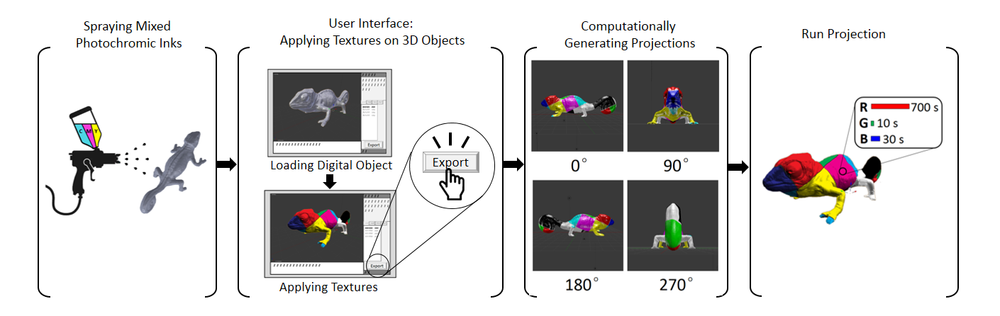

PDF Video Video
Sponsors Press


Photo-Chromeleon: Re-Programmable Multi-Color Textures Using Photochromic Dyes
Figure 1. We can create re-programmable multi-color textures from a single material. (a) We mixed CMY pho-tochromic dyes together to create our multi-color ink. (b) After coating the object, we use (c) a UV light source and a projector to control each color channel on a pixel-by-pixel basis, resulting in high-resolution multi-color tex-tures that can be reapplied multiple times.
In this paper, we present a method to create re-programmable multi-color textures that are made from a single material only. The key idea builds on the use of pho-tochromic inks that can switch their appearance from transparent to colored when exposed to light of a certain wavelength. By mixing cyan, magenta, and yellow (CMY) photochromic dyes into a single solution and leveraging the different absorption spectra of each dye, we can control each color channel in the solution separately. Our approach can transform single-material fabrication techniques, such as coating, into high-resolution multi-color processes.
We discuss the material mixing procedure, modifications to the light source, and the algorithm to control each color channel. We then show the results from an experiment in which we evaluated the available color space and the reso-lution of our textures. Finally, we demonstrate our user in-terface that allows users to transfer virtual textures onto physical objects and show a range of application examples.
INTRODUCTION
Programmable matter that has the ability to change its physical properties (color, shape, density) holds the promise of a future in which objects will re-configure themselves according to a user’s needs. One aspect of programma-ble matter is color, which would allow objects to change their appearance repeatedly. For instance, in clothing, ac-cessories could be altered to match the main outfit and textiles could be recolored for different events in the same day.
To update the appearance of objects, researchers started to use re-programmable materials, such as photochromic inks, that can switch from transparent to colored when exposed to light of a certain wavelength. Since the inks are bi-stable, the color remains even when the light source is removed. The process is fully reversible, therefore enabling users to recolor the object as many times as they desire.
A major limitation of using photochromic materials, however, is that they are single-color only, i.e. each material can only transition from transparent to one color and back to transparent (e.g. Photochromic Carpet). To bypass this limitation, researchers printed a voxel pattern with one photochromic color per voxel across the surface of an ob-ject and then selectively deactivated all voxels of the colors that were not part of the desired appearance (Color-Mod). However, this approach had several limitations: (1) it was low resolution (1mm x 1mm voxels) since each voxel had to be 3D printed, (2) it was limited to a few discrete colors only since each color had to be loaded as a separate 3D printing material, (3) it required a specialized 3D printer with 4+ print heads (one print head per color + infill).
Inspired by work from Hirayama et al., we present an approach that addresses all three problems. By mixing cy-an, magenta and yellow photochromic dyes into a single solution and leveraging the different absorption spectra of each dye, we can control each color channel in the solution separately, which results in a range of colors across the CMY color space. Since our approach uses only a single solution, we can transform single-material fabrication pro-cesses, such as coating, into high-resolution multi-color techniques (Figure 1).
The benefits of our approach are as follows: (1) since we no longer need to print individual voxels for each color, we can create high-resolution textures that are limited only by the precision of the projector; (2) since we can control each color channel and can determine to which extent it should be deactivated, we can create a range of intermediate col-ors in the CMY color spectrum and are no longer limited to a few discrete colors; (3) since we only need a single mate-rial for our approach, it eliminates the need for specialized 3D printing hardware and allows us to use simple fabrica-tion techniques, such as spraying or coating instead. Note that we do not claim to achieve the entire CMY color spectrum with our method due to partial deactivation across channels (see Figure 14 for the available color space).
We begin by summarizing the related work on photo-chromic systems and then introduce the main working principle of our approach. We then describe how we developed the CMY photochromic solution, how we modified the projector to output the correct wavelengths for deactivating the different photochromic dyes, and how we determined the achievable color gamut through our evaluation. Finally, we present a range of scenarios that demonstrate our system in practice.
BASIC WORKING PRINCIPLE
When cyan, magenta, and yellow photochromic colors are mixed together into a single solution and the solution is ac-tivated with UV light (i.e. all three color channels are fully saturated), the resulting color is black (Figure 2a). This is consistent with the CMY color chart shown in Figure 2b, i.e. the center of the chart, which shows the result of all three color channels in full saturation is black.

Figure 2. (a) CMY inks mixed together achieve black, which matches (b) the CMY color model.
Figure 3. The absorption peak of each photochromic dye is at a different wavelength. To control each color chan-nel, we can use the RGB LEDs of a projector to supply the required deactivation wavelength.
Since all of the deactivation wavelengths are within the spectrum of visible light (390 nm to 790 nm), we can use a regular office projector’s red, green, and blue LEDs to supply one deactivation wavelength each. As can be seen in Figure 3, shining blue light from the projector will deactivate yellow, green light will deactivate magenta and red light will deactivate cyan. Thus, to deactivate a specific photochromic color channel, the projector only needs to project R, G, or B pixels to reduce the saturation of the channel, as shown in Figure 4.
Figure 4. Theoretical result of shining different combinations of RGB on the mixed CMY photochromic ink.
Figure 5. Physical result of shining different combina-tions of RGB on the mixed CMY dye.
1.DEVELOPING THE PHOTOCHROMIC COATING
Several factors were involved in selecting the dyes for the CMY solution: (1) The visual appearance of the dyes needs to be as close to cyan, magenta, and yellow as possible in order to achieve the largest color gamut; (2) to be able to control each color channel individually, the deactivation wavelengths for each photochromic dye need to have as little overlap as possible; (3) the color of the dyes needs to be stable (i.e. do not deactivate quickly under ambient light). #1 Visual appearance: Figure 6 shows the available dyes from Yamada Chemical Co. which is the only compa-ny we found that reliably sells bi-stable (P-type) photo-chromic dyes. While we can see that a dye color exists for yellow (DAE-0068); for magenta, the nearest colors are red purple (DAE-0012), red (DAE-0004) and purple (DAE-0159), and for cyan: blue (DAE-0001) and blue purple (DAE-0018).
Figure 6. Bi-stable photochromic inks available from Yamada Chemical Co.: 0.1wt% die mixed in ethyl acetate.
Figure 7. Absorption spectra of the photochromic dyes in the visible wavelength range.
Before mixing the three photochromic dyes together, we first mixed each dye separately in laquer (Dupli-Color Paint Shop Finish Systems Matte-Finish Clear Coat (BSP307)). For the three separate mixtures, we used 0.05 wt% cyan, 0.05 wt% magenta and 0.3 wt% yellow respectively. These concentrations were chosen based on the deactivation times of each dye: Because yellow deac-tivates faster than the other two dyes, the concentration of the yellow dye was increased in order to extend the illumination time required for this dye to deactivate. We then mixed the resulting liquids by equal volumes (1:1:1) to achieve our multi-color coating. Before applying the coating to an object, we primed the surface of the object with spray paint to avoid subsurface scattering of the projected light. We first sprayed each object with black paint (drying time: 30 min), and then subsequently sprayed a white paint layer (drying time: 24 hours).
Figure 8. (a) Applying the photochromic coating and (b) the resulting coated object after UV activation.
2. MODIFYING THE PROJECTOR
Figure 9. Optical spectrum of the projector output and absorption spectra of cyan, magenta and yellow dyes.
Figure 10. Modified projector with added optical filter between green LED and collimator.
3. ALGORITHM TO COMPUTE DEACTIVATION TIMES
When starting our research, we had initially placed the photochromic mixture ink directly in front of the projector, i.e. only a few centimeters away from the lens, which produced the results shown in Figure 5. We found that once we placed the photochromics further away from the projector, i.e. at a projection distance of 30cm to allow the projected image to be in focus, the available color gamut reduced. Figure 11 shows the result acquired when projecting the same R,G,B sequence as in Figure 5 for comparison. Our assumption is that this difference is due to the change in light intensity, which we will explore in more detail in future work. By determining a relationship between projector distance and deactivation time, this could enable us to add ‘projector distance’ as a variable into our system to accommodate different placements of the objects to be re-colored. Naïve approach vs. Optimization algorithm
In an ideal scenario each LED would deactivate only one color channel, however, as seen in Figure 9, shining light from one of the LEDs also partially deactivates the other two color channels. This has two implications: First, using the photochromic dyes commercially available today, we can achieve only part of the CMY color spectrum (Figure 14). For instance, it is not possible to achieve a fully saturated cyan as deactivating magenta also causes cyan to partially deactivate. Second, a naïve approach that as-sumes that each projected deactivation wavelength (R, G, B), only affects a single photochromic color channel (Figure 4) will not lead to the correct color on the object due to additional effects of the other color channels on the dye. We therefore developed an optimization algorithm that takes into account the effect of overlapping absorption spectra. Figure 11 shows (a) the desired color texture and the results from both (b) the naïve approach and (c) our approximation algorithm, the latter of which leads to a color representation closer to the desired.
Figure 11. (a) Expected result. Results from (b) the naïve approach and (c) our optimization.
Deriving the Parameters of the Algorithm
Figure 12. Effect of exposure time of R, G, B projector channels on C, M, Y coatings (left = 0s, with time increasing to the right).

Figure 13. Deactivation times of the photochromic dye per light channel (R, G, B). We consider a dye to be deactivated when it drops below 5% saturation.
Where X ∈C,M,Y are cyan, magenta, yellow at full saturation and a_j,b_j,c_j are linear factors on the saturation reduction in relation to the illumination time t per color channel. Let P be the target color, then we want to minimize the expression:
4. EVALUATING OUR SYSTEM
First, we were interested in the color gamut we could achieve with the photochromic dyes purchased from Yamada Chemicals. To determine this, we placed a white cube coated with the CMY solution and fully activated it with the UV light until the coating appeared black. To sample the available color gamut, we took 5 images at evenly spaced deactivation times across the maximum deactivation length, i.e. for red/green: 1800 s and blue: 45 s. This created 5x5x5 sample images. After each light exposure, we used a camera to capture an image of the resulting outcome. We then converted the image into the CMY color space and extracted the mean value of each color channel using an OpenCV script. Figure 14 shows the captured texture colors of this experiment in the CIExy chromaticity diagram. As can be seen, our color gamut has its greatest impact in the area between the three primary photochromic colors.
Figure 14: Achievable color gamut of our photochromic coating in the CIE xy chromaticity diagram.
Texture Resolution
Next, we quantified the texture resolution that can be achieved using the photochromic coating. We projected three black and white checkerboard patterns with varying checkerboard widths (5px, 2px, and 1px width), onto the surface of a coated cube and applied the texture on the cube for 12 minutes until the white checkerboard areas (white = all three R, G, B LEDs on) were fully deactivated. We measured the pixel size of the physical texture using an Olympus SZ61 microscope (Figure 15) and found the pixel measurements to be consistent at 129 um for a single pixel (5px = 647 um, 35px = 257 um, 1px = 129 um).
Figure 15: Resolution of checkerboard pattern.
The time for a texture to fade depends on the saturation level of the texture being applied to the object. A stronger saturation will take longer to deactivate fully than a lighter saturation. To evaluate the durability in normal lighting conditions, we activated three samples, coated with C, M, and Y colors, with a UV light and placed them under 150 lux illumination (average light intensity of a living room is 100–300 lux). We recorded the time each color took to disappear: the cyan and magenta colors disappeared after 26h and 19h respectively, while the yellow color disap-peared after 5h (Figure 16). Since outside light is stronger than indoor lighting, the dyes deactivate quicker and are therefore more suitable for indoor use. These deactivation times are a limitation in the materials currently commercially available.
Figure 16. Color fade vs time for cyan, magenta and yel-low dyes under 150 lux illumination.
5. END-TO-END SYSTEM TO TRANSFER A TEXTURE

Figure 17. Overview of the end-to-end system.
We use a similar hardware setup and component layout as ColorMod: For activation, we use a UV light (Luminus Devices Inc. CBM-40-UV, ~365 nm, 4W) that we automatically turn on/off using a digital controller (PhatLight LED Develop Kits). For deactivation, we use our modified projector (LED DLP projector AAXA M6, 1920x1080 pixels, 1200 Lumens, with added green filter). For 360° projection on the object, we use a rotating platform that is controlled with a stepper motor. The rotating platform has a positioning screw to ensure central placement of the object when rotating. The setup with the above components is shown in Figure 18.
Figure 18. Hardware setup.
After placing the physical object onto the rotating platform, users load the corresponding 3D model into the 3D editor Blender (Figure 19a). Next, users apply a virtual texture to the digital model using Blender’s texture mapping tools (Figure 19b). Clicking on the ‘Preview’ button converts the texture to the closest match realizable with the available photochromic color space (Figure 19c). To compute this preview texture, we run our optimisation algorithm on the virtual texture and compute the deactivation times t for each pixel. We estimate the resulting physical color by calculating C(t) and then load the newly computed texture onto the 3D model. The user can toggle between the virtual and the preview texture, adjusting colors as required.

Figure 19. (a) Loading the 3D model of the object, (b) applying a virtual texture onto the 3D model, (c) computing the preview texture.
When users hit the ‘transfer texture’ button, our custom python plug-in for Blender handles the projection mapping. Our system first generates four ray traced projection images by virtually rotating the 3D model in 90° increments to reach all four sides of the object. The plug-in then sends the projection images to a Processing application (via the OSC protocol) that generates the deactivation animations. To create the deactivation animations, the Processing application converts the color values of each pixel in the projection images into deactivation times for each of the projector’s R, G, B color channels. It then computes the optimal deactiva-tion times for each pixel using our optimization algorithm. Our implemention generates this animation in 5-25 seconds per view depending on the size of the object. To begin the projection sequence, users hit the ‘Activation’ button to activate the photochromic coating on the object. The rotating platform turns 360°; in 10 steps (36°; increments, 1 min per step, 10 min total). Users then press the ‘Projection’ button to apply the computed R, G, B anima-tions that deactivate the color channels on a per-pixel basis to create the desired color texture (Figure 20). Once the projection on one side of the object is complete, the platform rotates the object by 90° and repeats this process until all the sides have processed. The total time to apply color to the object depends on the object’s shape and the texture being applied (up to 45 min per side).
Figure 20. Projecting the deactivation colors onto the 3D object to achieve the desired texture.
Figure 21 shows the final result of the texture after it has been applied to the photochromic object. The texture shown took 2 hours to apply. Since the texture contains pure yellow, which requires the longest deactivation time, most other textures can be transferred significantly faster. Note that since the texture transfer is done in a black box, no decay due to external light occurs during this process. The (de)activation times could also be significantly decreased by using a stronger projector with more lumen.
Figure 21. Final result of the texture on the object.
Objects can be re-colored multiple times, simply by repeat-ing the procedure described above, i.e. the UV light will re-activate all color channels (resulting in a black object), enabling a new texture to be applied through the projector. The zebra texture show in Figure 22 took 1 hour to apply.
Figure 22. Re-coloring the chameleon (zebra texture) by activating with UV light and applying a new texture.
APPLICATION SCENARIOS
Photochromic shoes, textiles, and accessories could enable users to alter the appearance of their outfits from day to night without the need to carry multiple items. Applying the photochromic coating to a phone case would enable users to apply and change the design or pattern of the casing on a daily basis. Here, have applied the coating to a phone case of an iPhone XR (length: 15.3 cm, width: 7.8 cm) (Figure 23). The patterns on the phone case can be re-programmed. The textures took between 24-40 minutes to apply (top: 24 min, middle: 34 min, bottom: 40 min).

Figure 23. The same phone case re-programmed three times with different textures.
Figure 24 The same shoe with two different textures to match a user’s daily outfit.
In a showroom or sales scenario, a re-programmable color-changing coating could enable potential buyers to explore different textures or patterns on a product before making a final choice. Figure 25 demonstrates this by exploring different textures for a car. To realise this vision, we sprayed the coating onto a 1/18 scale model of an Aston Martin Vanquish (length: 26 cm) and projected a range of different textures. A re-programmable coating could also be used within the context of car-sharing among multiple users or to display changing advertisements on the car exterior. The textures shown took 40 min (butterflies) and 60 min (flame) to apply.
Figure 25. The same car with two different color textures.
LIMITATIONS AND FUTURE WORK
The photochromic dyes available on the market are cur-rently not optimal for our approach for multiple reasons: First, among the available photochromic dyes there is no good visual match for the magenta and cyan color channels, therefore we had to approximate these color channels with the closest available dye, which significantly reduced the color gamut. The development of photochromic dyes is an on-going research field in material science. Irie et al., for instance, demonstrated how to create a cyan dye that would potentially be a better candidate for our approach than Yamada Chemical’s blue dye. Second, the available photochromic dyes at present signifanctly overlap in their deactivation spectra, which further reduces the available color gamut since the color channels cannot be controlled independent of one another. Photochromic dyes with narrower absorption spectra would be better suited for our purposes. Fabrication: Single Material 3D Printing (FDM, SLA):
Our approach can turn a single-material process into a multi-color process. While we have shown applications in coat-ing, we can also consider mixing the multi-color photochromic ink into a single roll of filament for fused deposition modelling (FDM) printing, or in resin used for stereo-lithography (SLA) 3D printing. This has the potential to enable multi-color prints at high resolution that are not limited by the number of extrusion heads or the single-resin.
CONCLUSION
ACKNOWLEDGEMENTS